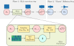

GLA-Grad: A Griffin-Lim Extended Waveform Generation Diffusion Model
Haocheng Liu, Teysir Baoueb, Mathieu Fontaine, Jonathan Le Roux, Gaël Richard
Abstract: Diffusion models are receiving a growing interest for a variety of signal generation tasks such as speech or music synthesis. WaveGrad, for example, is a successful diffusion model that conditionally uses the mel spectrogram to guide a diffusion process for the generation of high-fidelity audio. However, such models face important challenges concerning the noise diffusion process for training and inference, and they have difficulty generating high-quality speech for speakers that were not seen during training. With the aim of minimizing the conditioning error and increasing the efficiency of the noise diffusion process, we propose in this paper a new scheme called GLA-Grad, which consists in introducing a phase recovery algorithm such as the Griffin-Lim algorithm (GLA) at each step of the regular diffusion process. Furthermore, it can be directly applied to an already-trained waveform generation model, without additional training or fine-tuning. We show that our algorithm outperforms state-of-the-art diffusion models for speech generation, especially when generating speech for a previously unseen target speaker.
Illustration of proposed framework:

Waveform generation:
Remark: The equations mentioned in the figure could be found in the article. We conducted experiments under three setups (LJ→LJ, LJ→VCTK, VCTK→VCTK), training and evaluating in different scenarios. This demonstration page presents the inference results of the proposed model with noise schedule WG-6 and searched schedule for WaveGrad and GLA-Grad under these setups.
| Experiments |
LJ Speech → LJ Speech
Utterance: Experiment 1 |
LJ Speech → VCTK
Utterance: Experiment 2 |
VCTK → VCTK
Utterance: Experiment 3 |
| Ground Truth: | |||
| GLA-Grad: | |||
| WaveGrad: | |||
| Experiments |
LJ Speech → LJ Speech
Utterance: Experiment 1 |
LJ Speech → VCTK
Utterance: Experiment 2 |
VCTK → VCTK
Utterance: Experiment 3 |
| Ground Truth: | |||
| GLA-Grad: | |||
| WaveGrad: | |||
Although GLA-Grad is not as good as wavegrad with optimal schedule WG-6 under single speaker scenario LJ→LJ, it shows robustness and effectiveness with different schedules and in various unseen speakers tasks. In addition, through our experiments, we have also observed that a moderate number of GLA steps can lead to better generalization capabilities across domains. This indicates that the number of GLA steps significantly impacts model performance: too few steps fail to fully harness the model's cross-domain inference potential, while too many steps substantially degrade the generation quality (GLA performs significantly worse in reconstruction tasks than deep learning models), which may all lead to unstable generation quality. This phenomenon suggests that balancing the number of GLA steps to optimize inferencing outcomes is an issue worthy of in-depth investigation.